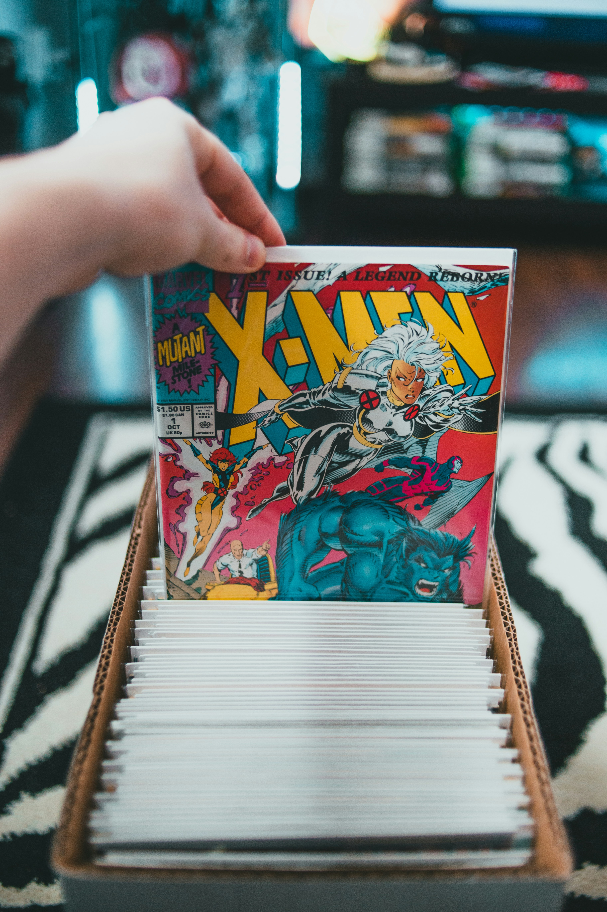

.jpg)
The Comic Shop experience

The comic shop is a place where fantasy, imagination, and heroes meet. Filled with bright colors, racks of comics, and dedicated readers, comic shops bring a unique space for fans to unite. When walking into a comic shop, you might expect things to be as simple as finding a comic you love and buying it. However, what many walk into is a welcoming environment that lacks judgement and expectation. Some shops have seats to sit down and read while you browse. Some shops have knowledgeable workers to debate and discuss with. Some shops even have their own events for everyone in their community to come show their love the universes that inspire us all.
No matter the type of fan you are, a comic shop can bring you even closer to the worlds you read on the page. Interacting with fans and fellow readers alike can help build a community of true believers just like you! Comics have been a longstanding form of literature that has developed into cinematic, animated, and digital universes. No matter the person, there is something within the medium for everyone to enjoy. When walking through a comic sop, take a moment to think about what it is you're looking for. At times, the amount of books to look through can feel very overwhelming! Take it slow and enjoy the time you have, it can be very therapeutic! Most comic shops will be organized down to the very issue of each comic. For some shops, new releases line the walls with refreshes happening every week. Other shops may have box upon box of back issues to flip through. Every comic shop is different, but the experience will always be tailored how you want it!
Collecting comics is an addicting hobby that can easily overtake any fan small or big. However, it's important to remember the fun of collecting something as classic as comics! From weekly visits to the comic shop to conventions, you can do as much or little as you want! Jumping into comic collecting can lead you some of the greatest points of your life and it's as easy as hitting up your local comic shop and picking up anything that interests you. Support your local comic shops and join thousands of readers around the world today!